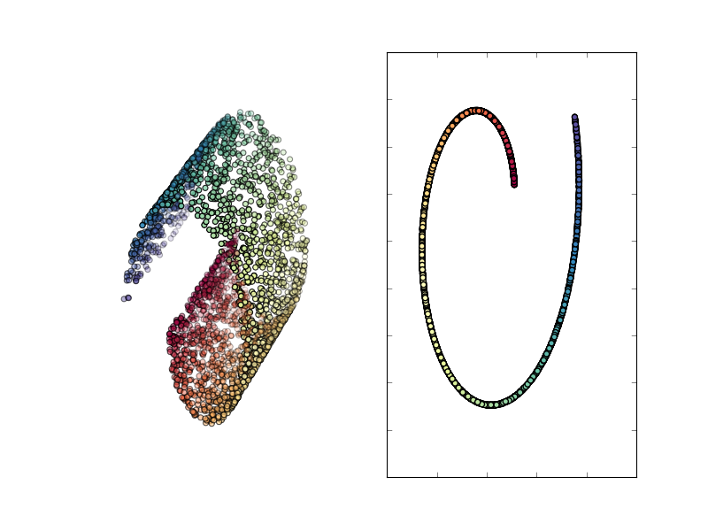

Tapkee
An efficient dimension reduction toolbox
Locality Preserving Projections
The Locality Preserving Projections algorithm can be viewed as a linear approximation of the
Laplacian Eigenmaps algorithm. It reproduces
first two steps of the Laplacian Eigenmaps and the difference lies in the step 3.
To obtain \( t \) features (coordinates) of embedded vectors solve the partial generalized eigenproblem
\[ R (D-W) R^{T} f = \lambda R D R^{T} f, \]
where \( R \) contains all feature vectors row-wise, for smallest eigenvalues
\( \lambda_1, \dots, \lambda_t, \lambda_{t+1} \) and its corresponding eigenvectors \( f_1, \dots, f_t, f_{t+1} \).
Drop the smallest eigenvalue \( \lambda_1 \sim 0 \) (with the corresponding eigenvector) and
form embedding matrix such that \(i\)-th coordinate (\( i=1,\dots,N \)) of \(j\)-th eigenvector
(\( j=1,\dots,t\) ) corresponds to \(j\)-th coordinate of projected \(i\)-th vector.
Result of applying LPP to swissroll data

References
-
He, X., & Niyogi, P. (2003). Locality Preserving Projections.